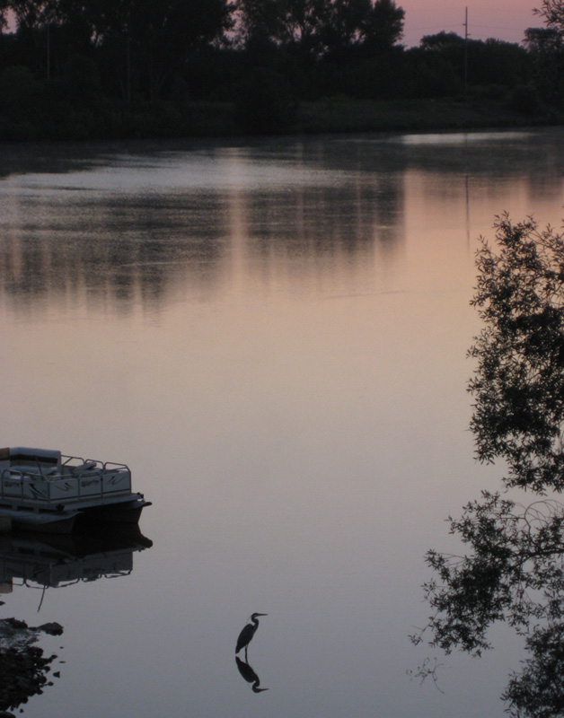

|
A Visitor To Our Lake This Morning Came
by Rick Shabsin
July 11, 2012
A visitor to our lake this morning came
And waded, patient as she dipped and fished.
The scene, serene and peaceful as I watched,
'Twas just what I for all the world wished.
Her legs so straight, her neck a curled cord;
Stood stoic as the sky did light to gray.
Yet soon, she had enough and spread her wings,
Took to the sky and slowly flew away.
|
|

|
I'll wait for her return another morn,
And watch as others play onto the scene.
But early morning views like this remind
That peace and beauty are but short-lived dreams.
|
|